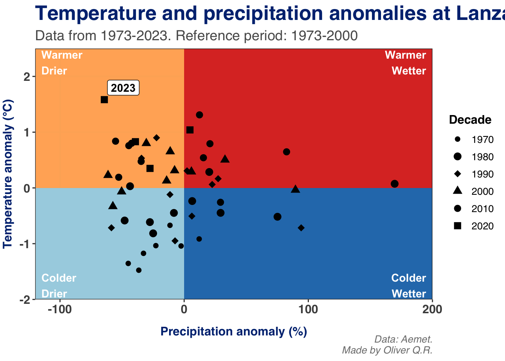
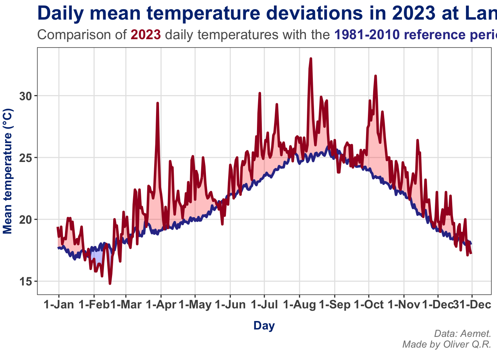
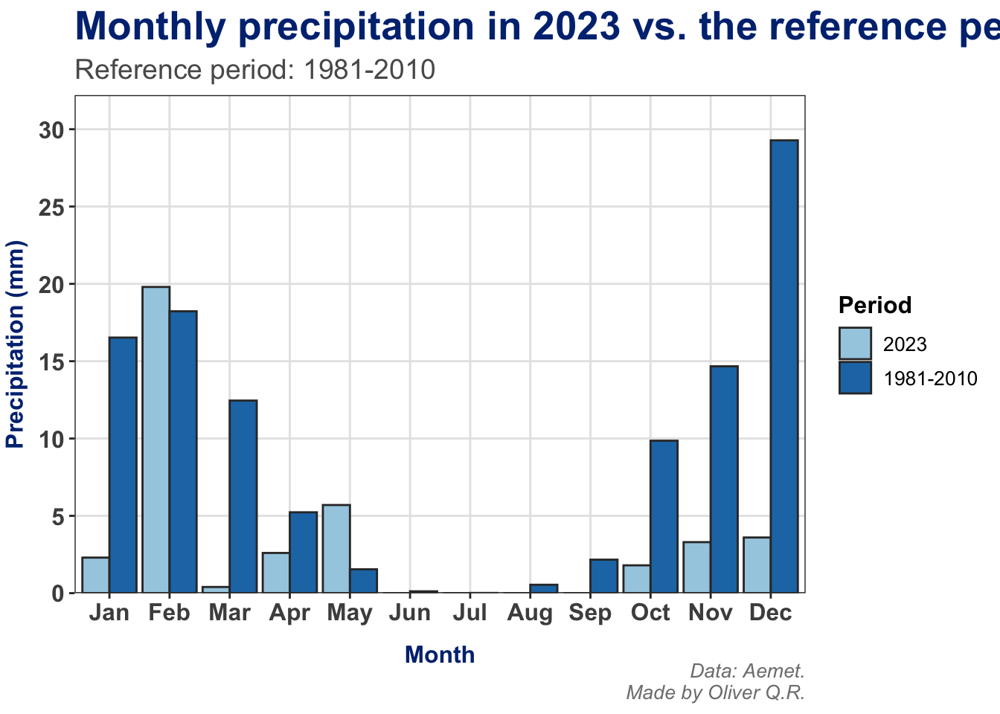
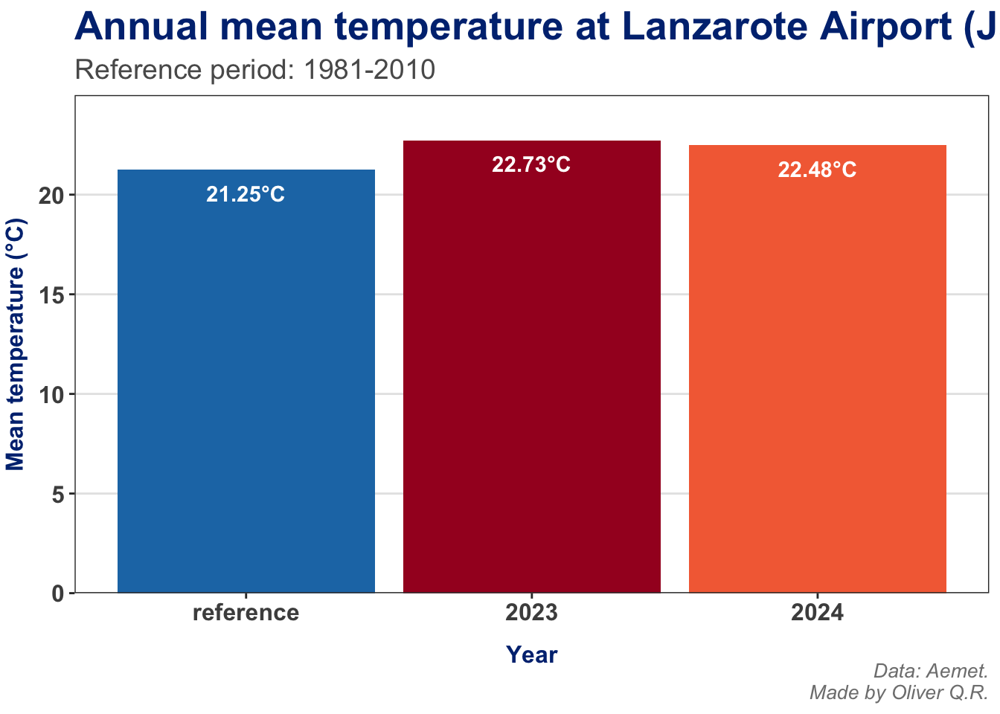
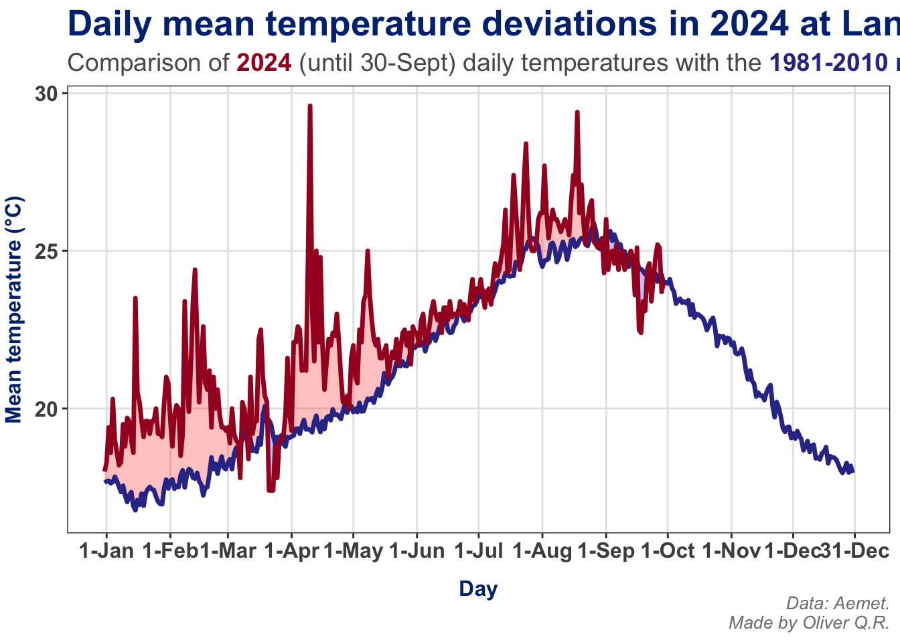
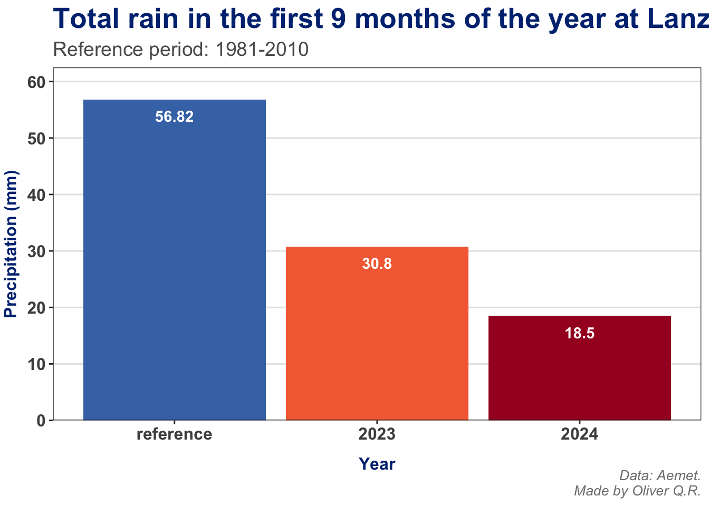
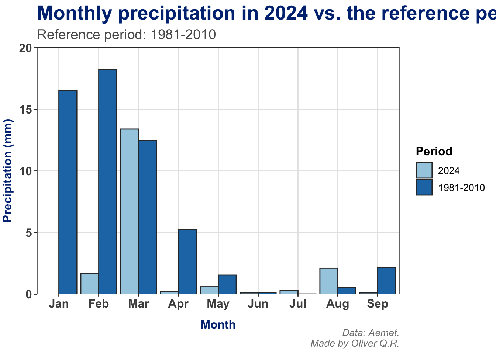

A look at the last 50 years of temperature and precipitation data in Lanzarote.
Author
Oliver Q.R.
A look at the last 50 years of temperature and precipitation data in Lanzarote.
Lanzarote is the northernmost and easternmost of the Canary Islands. Located 125 km off the coast of continental Africa, its subtropical climate is characterised by mild temperatures all year-round and little precipitation. Sometimes referred to as the island of eternal Spring, Lanzarote’s climate is classified as hot dessert climate according to the Köppen climate classification.
Figure 1. Geographic location of Lanzarote and its airport.
Using Aemet’s Open Data, I downloaded temperature and precipitation data from the last 50 years recorded at the station located at Lanzarote airport, with the aim of analysing possible trends over this period.
Before continuing, I would like to point out that Lanzarote, like other Canary islands, is characterised by having more than one microclimate. For example, the northern and north-western areas are more exposed to the chilly oceanic alisios (trade winds) that blow from the northeast, making these parts of the island a bit cooler and slightly more humid than areas to the south and southeast. However, due to the relatively low altitude of Lanzarote, the differences between the microclimates on this island are not as pronounced as on other islands with higher mountains (like Tenerife or La Palma).
Temperature.
With that in mind, let’s start by having a look at annual mean temperatures over the last 50 years. As seen in figure 2, there is a long-term warming trend, mirroring what’s happening worldwide. The mean annual temperature has increased ~3°C in the last 50 years, with 2023 marking the warmest year on record (22.71°C).
Code
ace_data %>%filter(year >1972& year <2024) %>%group_by(year) %>%summarise(tmean =mean(tmean, na.rm =TRUE)) %>%ggplot(aes(x = year, y = tmean)) +geom_line(linewidth =1.2, colour ="#1f78b4") +geom_point(size =3, colour ="#1f78b4") +geom_label_repel(data =~.x %>%filter(tmean ==min(tmean)),aes(x = year, y = tmean, label =paste0(round(tmean, 2), "°C")),size =3.5, nudge_x =3, colour ="#313695", fontface ="bold") +geom_label_repel(data =~.x %>%filter(tmean ==max(tmean)),aes(x = year, y = tmean, label =paste0(round(tmean, 2), "°C")),size =3.5, nudge_x =-3, colour ="#a50026", fontface ="bold") +scale_y_continuous(breaks =pretty_breaks(n =10)) +scale_x_continuous(breaks =seq(1975, 2020, 5)) +labs(title ="Annual mean temperature at Lanzarote Airport",subtitle ="Data from 1973 to 2023",x ="Year",y ="Mean temperature (°C)",caption ="Data: Aemet.\nMade by Oliver Q.R.") +theme_bw(base_family ="Arial") +theme(plot.title =element_text(face ="bold", size =20, colour ="#003080"),plot.subtitle =element_text(size =14, colour ="#5a5a5a"),plot.caption =element_text(size =10, face ="italic", colour ="grey50"),axis.title =element_text(size =12, face ="bold", colour ="#003080"),axis.title.x =element_text(vjust =-2),axis.title.y =element_text(vjust =2),axis.text =element_text(size =12, face ="bold", colour ="grey30"),panel.grid.major =element_line(colour ="grey90"),panel.grid.minor =element_blank())
Figure 2. Annual mean temperature over the last 50 years.
To find the coldest year within this period, we have to go back to 1974, which had a mean temperature of 19.65°C. This year, together with 1973 and 1975 are the only years in the last five decades with a mean temperature below 20°C in the last 50 years. As we move forward in time to more recent years, annual mean temperatures consistently go above 20, 21 and even 22°C in recent years, like 2022 and 2023. Except the years 2018 and 2019, most recent years have recorded mean temperatures around or above 21.5°C.
When using the period 1981-2010 as a reference, we can see significant positive temperature anomalies in recent years, with 2023 showing the largest anomaly (+1.58°C; figure 3). By contrast, most negative anomalies occurred in the 1970s, 1980s and early 1990s.
Code
# mean temperature for the reference period (1981-2010)ref_tmean <- ace_data %>%filter(year >1980& year <2011) %>%summarise(tmean =mean(tmean, na.rm =TRUE)) %>%pull()ace_data %>%filter(year >1972& year <2024) %>%group_by(year) %>%summarise(tmean =mean(tmean, na.rm =TRUE)) %>%mutate(ta = tmean - ref_tmean) %>%ggplot(aes(x = year, y = ta, fill = ta)) +geom_col(colour ="#333333") +scale_x_continuous(breaks =seq(1975, 2020, 5)) +scale_y_continuous(breaks =pretty_breaks(n =9),limits =c(-2.25, 2.25)) +scale_fill_gradient2(low ="#053061", mid ="#f7f7f7", high ="#67001f",midpoint =0, limits =c(-2.1, 2.1)) +geom_label_repel(data =~.x %>%filter(ta ==max(ta)),aes(x = year, y = ta, label =paste0("+", round(ta, 2), "°C")),size =3.5, nudge_x =-2.5, nudge_y =0.1, fill ="white",colour ="#67001f", fontface ="bold") +geom_label_repel(data =~.x %>%filter(ta !=max(ta)) %>%filter(ta ==max(ta)),aes(x = year, y = ta, label =paste0("+", round(ta, 2), "°C")),size =3.5, nudge_x =-2.5, nudge_y =0.1, fill ="white",colour ="#67001f", fontface ="bold") +geom_label_repel(data =~.x %>%filter(ta !=max(ta)) %>%filter(ta !=max(ta)) %>%filter(ta ==max(ta)),aes(x = year, y = ta, label =paste0("+", round(ta, 2), "°C")),size =3.5, nudge_x =-2.5, nudge_y =0.1, fill ="white",colour ="#67001f", fontface ="bold") +labs(title ="Annual mean temperature deviations at Lanzarote Airport",subtitle ="Comparison of temperature deviations from the reference mean (period: 1981-2010)",x ="Year",y ="Temperature (°C)",caption ="Data: Aemet.\nMade by Oliver Q.R.",fill ="°C") +theme_bw(base_family ="Arial") +theme(plot.title =element_text(face ="bold", size =20, colour ="#003080"),plot.subtitle =element_text(size =14, colour ="#5a5a5a"),plot.caption =element_text(size =10, face ="italic", colour ="grey50"),legend.title =element_text(size =12, face ="bold"),legend.text =element_text(size =10),axis.title =element_text(size =12, face ="bold", colour ="#003080"),axis.title.x =element_text(vjust =-2),axis.title.y =element_text(vjust =2),axis.text =element_text(size =12, face ="bold", colour ="grey30"),panel.grid.major =element_line(colour ="grey90"),panel.grid.minor =element_blank())
Figure 3. Annual mean temperature anomalies.
In the last 20 years, only 2005 and 2018 had very mild negative temperature anomalies (-0.04 and -0.26°C, respectively, which are almost negligible). The other 18 years within this period had positive temperature anomalies, with 2010, 2022 and 2023 standing out for having anomalies above 1°C.
If we look at the mean temperature by decade (figure 4), we can see a significant increase, following almost a linear path (0.3-0.4°C increase per decade) in the last 30 years. The 1970s (data from 1973 to 1979) were the coldest period, with an average temperature of 20°C, whereas the 2020s are the warmest period so far, averaging 22.1°C.
Code
ace_data %>%filter(year >1972& year <2024) %>%mutate(decade =10*floor(year /10)) %>%group_by(decade) %>%summarise(tmean =mean(tmean, na.rm =TRUE)) %>%ggplot(aes(x = decade, y = tmean)) +geom_line(linewidth =1.2, colour ="#1f78b4") +geom_point(size =4, colour ="#1f78b4") +scale_x_continuous(labels =c("1970s", "1980s", "1990s", "2000s", "2010s", "2020s")) +scale_y_continuous(breaks =pretty_breaks(n =7)) +labs(title ="Mean temperature by decade at Lanzarote Airport",subtitle ="Data from 1973 to 2023",x ="Decade",y ="Temperature (°C)",caption ="Data: Aemet.\nMade by Oliver Q.R.") +theme_bw(base_family ="Arial") +theme(plot.title =element_text(face ="bold", size =20, colour ="#003080"),plot.subtitle =element_text(size =14, colour ="#5a5a5a"),plot.caption =element_text(size =10, face ="italic", colour ="grey50"),legend.title =element_text(size =12, face ="bold"),legend.text =element_text(size =10),axis.title =element_text(size =12, face ="bold", colour ="#003080"),axis.title.x =element_text(vjust =-2),axis.title.y =element_text(vjust =2),axis.text =element_text(size =12, face ="bold", colour ="grey30"),panel.grid.major =element_line(colour ="grey90"),panel.grid.minor =element_blank())
Figure 4. Mean temperature by decade.
An interesting observation is that the mean temperature of the period 2020-2023 is already 0.4°C higher than that of the 2010s. If we look at the trend of annual mean temperatures, it wouldn’t be surprising if this temperature increase becomes even more pronounced by the end of the decade (potentially exceeding the 0.8°C rise observed between the 1970s and 1980s).
Code
# monthly mean temperature by decadeace_data %>%filter(year >1972& year <2024) %>%mutate(decade =factor(paste0(10*floor(year /10), "s"),levels =paste0(seq(1970, 2020, 10), "s"))) %>%group_by(decade, month) %>%summarise(tmean =mean(tmean, na.rm =TRUE), .groups ="drop") %>%ggplot(aes(x = month, y = tmean, group = decade, colour = decade, shape = decade)) +geom_line(linewidth =1.2) +geom_point(size =4) +scale_x_continuous(breaks =1:12,labels = month.abb) +scale_y_continuous(breaks =pretty_breaks(n =7)) +scale_colour_manual(values =c("#313695", "#74add1", "#abd9e9", "#fee090", "#f46d43", "#a50026")) +scale_shape_manual(values =20:15) +labs(title ="Monthly mean temperature by decade at Lanzarote Airport",subtitle ="Data from 1973 to 2023",x ="Month",y ="Temperature (°C)",caption ="Data: Aemet.\nMade by Oliver Q.R.",colour ="Decade",shape ="Decade") +theme_bw(base_family ="Arial") +theme(plot.title =element_text(face ="bold", size =20, colour ="#003080"),plot.subtitle =element_text(size =14, colour ="#5a5a5a"),plot.caption =element_text(size =10, face ="italic", colour ="grey50"),legend.title =element_text(size =12, face ="bold"),legend.text =element_text(size =10),axis.title =element_text(size =12, face ="bold", colour ="#003080"),axis.title.x =element_text(vjust =-2),axis.title.y =element_text(vjust =2),axis.text =element_text(size =12, face ="bold", colour ="grey30"),panel.grid.major =element_line(colour ="grey90"),panel.grid.minor =element_blank())
Figure 5. Mean temperature by month and decade.
If we break this down even further, looking at monthly mean temperature by decade, we can see that every month of the year has experienced an increase in the last five decades (figure 5 and table 1). The spring and summer months have seen the greatest temperature rise, with June, May and April having average temperatures over 2.5°C higher in the 2020s than in the 1970s.
June is the month that has experienced the highest average temperature rise, with 2.91°C in the last 50 years, followed by May (2.76°C). Another month that stands out is October, experiencing a 2.64°C increase in the last five decades.
In the 1970s, there were five months a year with an average temperature above 20°C, whereas in the 2020s eight months have average temperatures above 20°C. The temperature increase is less extreme in winter months, but still remains above 1°C.
Precipitation.
Lanzarote is an island with scarce precipitation that falls mainly during winter months. Historically, the precipitation patterns on the island have been highly irregular, with some years recording relatively high amount (considering the island’s low average rainfall), and others experiencing very dry conditions. And this variability is something we can clearly see in the last 50 years (figure 6).
With such an irregular pattern, it is hard to establish a clear trend. However, we can clearly observe the high variability in figure 6, which shows the total rainfall per year in the last five decades. As mentioned above, an irregular pattern can easily be spotted. 1989 was the wettest year of the last 50 years, with 298.2 mm rainfall, while 2023 was the driest, with only 39.5 mm rainfall.
Using the reference period 1981-2010, we can try to gain extra insights into how annual precipitation has deviated from the norm. Figure 7 shows the precipitation anomalies expressed as percentage deviation from the average of the reference period. From these data, we can spot a wetter period in the late 1980s-early 1990s, with 5 consecutive years having a positive rain anomaly. In this period, 1989 is the year having the largest positive anomaly (+169.55%), marking the highest positive deviation in the last 50 years.
Code
# yearly precipitation anomalies (reference period: 1981-2010)ref_prec <- ace_data %>%filter(year >1980& year <2011) %>%group_by(year) %>%summarise(prec =sum(prec, na.rm =TRUE)) %>%summarise(prec =mean(prec, na.rm =TRUE)) %>%pull()ace_data %>%filter(year >1972& year <2024) %>%group_by(year) %>%summarise(prec =sum(prec, na.rm =TRUE)) %>%mutate(prec_an = (100* prec / ref_prec) -100) %>%ggplot(aes(x = year, y = prec_an, fill = prec_an)) +geom_col(colour ="#333333") +geom_label_repel(data =~.x %>%filter(prec_an ==min(prec_an)),aes(x = year, y = prec_an, label =paste0(round(prec_an, 2), "%")),size =3.5, nudge_x =-0.5, nudge_y =-15, fill ="white",colour ="#67001f", fontface ="bold") +geom_label_repel(data =~.x %>%filter(prec_an ==max(prec_an)),aes(x = year, y = prec_an, label =paste0("+", round(prec_an, 2), "%")),size =3.5, nudge_x =1, nudge_y =1, fill ="white",colour ="darkblue", fontface ="bold") +scale_x_continuous(breaks =seq(1975, 2020, 5)) +scale_y_continuous(limits =c(-200, 200),breaks =pretty_breaks(n =9)) +scale_fill_gradient2(low ="#9e0142", mid ="#f7f7f7", high ="#5e4fa2",midpoint =0,limits =c(-200, 200)) +labs(title ="Annual precipitation anomalies at Lanzarote Airport",subtitle ="Deviations from the annual mean precipitation for the period 1981-2010",x ="Year",y ="Precipitation anomaly (%)",caption ="Data: Aemet.\nMade by Oliver Q.R.",fill ="mm") +theme_bw(base_family ="Arial") +theme(plot.title =element_text(face ="bold", size =20, colour ="#003080"),plot.subtitle =element_text(size =14, colour ="#5a5a5a"),plot.caption =element_text(size =10, face ="italic", colour ="grey50"),legend.title =element_text(size =12, face ="bold"),legend.text =element_text(size =10),axis.title =element_text(size =12, face ="bold", colour ="#003080"),axis.title.x =element_text(vjust =-2),axis.title.y =element_text(vjust =2),axis.text =element_text(size =12, face ="bold", colour ="grey30"),panel.grid.major =element_line(colour ="grey90"),panel.grid.minor =element_blank())
Figure 7. Precipitation anomaly by year.
In contrast, recent years have tended to be drier. Four out of the last five years had a negative anomaly, with 2023 standing out as the driest year in the series (-64.3%). It looks like the current is a dry period, in contrast to the period 1987-1991, and similar to the period 1997-2003 (and possibly the period before 1979).
2023: the warmest and drier year on record.
When we look at temperature and precipitation anomalies, using averages from the period 1981-2010 as reference, the year 2023 is the warmest and driest year since, at least, 1973 (with a mean temperature 1.58°C above the reference and precipitation levels dropping by 64.3%). If we look at the rest of the years in this quadrant (warmer and drier years), we could be tempted to classify 2023 as an extreme event, since the anomalies for both temperature and precipitation stand apart from other years in the series.
Code
# year classification according to mean temperature and precipitation anomaliesace_data %>%filter(year >1972& year <2024) %>%group_by(year) %>%summarise(tmean =mean(tmean, na.rm =TRUE)) %>%mutate(tmean_an = tmean - ref_tmean) %>%left_join(ace_data %>%filter(year >1972& year <2024) %>%group_by(year) %>%summarise(prec =sum(prec, na.rm =TRUE)) %>%mutate(prec_an = (100* prec / ref_prec) -100),by ="year") %>%mutate(decade =as.character(10*floor(year /10))) %>%ggplot(aes(x = prec_an, y = tmean_an, shape = decade)) +geom_rect(aes(xmin =-120, xmax =0, ymin =-2, ymax =0),fill ="#a6cee3", alpha =0.1) +geom_rect(aes(xmin =0, xmax =200, ymin =-2, ymax =0),fill ="#1f78b4", alpha =0.1) +geom_rect(aes(xmin =0, xmax =200, ymin =0, ymax =2.5),fill ="#d73027", alpha =0.1) +geom_rect(aes(xmin =-120, xmax =0, ymin =0, ymax =2.5),fill ="#fdae61", alpha =0.1) +annotate(geom ="text", label ="Colder\nDrier", x =-115, y =-1.75, colour ="white",hjust ="left", fontface ="bold") +annotate(geom ="text", label ="Colder\nWetter", x =195, y =-1.75, colour ="white",hjust ="right", fontface ="bold") +annotate(geom ="text", label ="Warmer\nWetter", x =195, y =2.25, colour ="white",hjust ="right", fontface ="bold") +annotate(geom ="text", label ="Warmer\nDrier", x =-115, y =2.25, colour ="white",hjust ="left", fontface ="bold") +geom_label_repel(data =~.x %>%filter(year ==2023),aes(label = year), fontface ="bold") +geom_point(size =3) +scale_x_continuous(limits =c(-120, 200),expand =c(0, 0)) +scale_y_continuous(limits =c(-2, 2.5),expand =c(0, 0)) +scale_shape_manual(values =20:15) +labs(title ="Temperature and precipitation anomalies at Lanzarote airport",subtitle ="Data from 1973-2023. Reference period: 1973-2000",x ="Precipitation anomaly (%)",y ="Temperature anomaly (°C)",caption ="Data: Aemet.\nMade by Oliver Q.R.",shape ="Decade") +theme_bw(base_family ="sans") +theme(plot.title =element_text(face ="bold", size =20, colour ="#003080"),plot.subtitle =element_text(size =14, colour ="#5a5a5a"),plot.caption =element_text(size =10, face ="italic", colour ="grey50"),legend.title =element_text(size =12, face ="bold"),legend.text =element_text(size =10),axis.title =element_text(size =12, face ="bold", colour ="#003080"),axis.title.x =element_text(vjust =-2),axis.title.y =element_text(vjust =2),axis.text =element_text(size =12, face ="bold", colour ="grey30"),panel.grid.major =element_line(colour ="grey90"),panel.grid.minor =element_blank())

Figure 8. Year classification according to temperature and precipitation anomalies.
Most of 2023’s daily mean temperatures were well above those of the reference period 1981-2010 (figure 9), with some periods showing significant deviations. The maximum deviation occurred on March 30, with a mean temperature for that day 10.6°C higher than the reference.
Code
# year 2023 daily mean temperatureace_data %>%filter(year >1980& year <2011) %>%group_by(month, day) %>%summarise(tmean_ref =mean(tmean, na.rm =TRUE)) %>%right_join(ace_data %>%filter(year ==2023) %>%select(month, day, tmean),by =c("month", "day")) %>%mutate(tmean_diff = tmean - tmean_ref,red_max =if_else(tmean_diff >0, tmean,NA),red_min =if_else(tmean_diff >0, tmean_ref,NA),blue_max =if_else(tmean_diff <0, tmean_ref,NA),blue_min =if_else(tmean_diff <0, tmean,NA),day_month =make_date(month = month, day = day)) %>%ggplot(aes(x = day_month)) +geom_ribbon(aes(ymin = blue_min, ymax = blue_max),fill ="blue", alpha =0.25) +geom_ribbon(aes(ymin = red_min, ymax = red_max),fill ="red", alpha =0.25) +geom_line(aes(y = tmean_ref), colour ="#313695", linewidth =1.2) +geom_line(aes(y = tmean), colour ="#a50026", linewidth =1.2) +scale_x_continuous(breaks =c(1, yday("1970-02-01"), yday("1970-03-01"),yday("1970-04-01"), yday("1970-05-01"), yday("1970-06-01"),yday("1970-07-01"), yday("1970-08-01"), yday("1970-09-01"),yday("1970-10-01"), yday("1970-11-01"), yday("1970-12-01"),yday("1970-12-31")),labels =c(paste0("1-", month.abb), "31-Dec")) +labs(title ="Daily mean temperature deviations in 2023 at Lanzarote Airport",subtitle ="Comparison of <span style=color:#a50026>**2023**</span> daily temperatures with the <span style=color:#313695>**1981-2010 reference period**</span>",x ="Day",y ="Mean temperature (°C)",caption ="Data: Aemet.\nMade by Oliver Q.R.") +theme_bw(base_family ="Arial") +theme(plot.title =element_text(face ="bold", size =20, colour ="#003080"),plot.subtitle =element_markdown(size =14, colour ="#5a5a5a"),plot.caption =element_text(size =10, face ="italic", colour ="grey50"),axis.title =element_text(size =12, face ="bold", colour ="#003080"),axis.title.x =element_text(vjust =-2),axis.title.y =element_text(vjust =2),axis.text =element_text(size =12, face ="bold", colour ="grey30"),panel.grid.major =element_line(colour ="grey90"),panel.grid.minor =element_blank())
`summarise()` has grouped output by 'month'. You can override using the
`.groups` argument.

Figure 9. Daily mean temperatures in 2023 compared to those of the reference period 1981-2010.
Summarising key deviation statistics, 2023 had:
29 days had positive temperature anomalies larger than the reference mean + 3σ,
40 days had a positive temperature anomaly between 2σ and 3σ,
100 days had an anomaly larger than the reference plus 1σ.
In contrast, only 8 days had a negative anomaly beyond 1σ, and 188 days had mean temperatures that fell within ±1σ of the reference. These observations highlight the extreme warmth of the year 2023.
`summarise()` has grouped output by 'month'. You can override using the
`.groups` argument.

Figure 10. Monthly precipitation in 2023 in comparison with the reference period.
In regards to precipitation, 2023 experienced less rainfall than the reference period 1981-2010 in most months of the year (figure 10). For example, January and March were very dry compared to the reference, like autumn months (October to December).
Overall, and similar to what happened with the mean temperature, the precipitation observations highlight 2023 as an extreme year, with significantly warm and dry conditions.
What about 2024 so far?
Based on the data from the first 9 months, 2024 continues the warming trend seen in the last years. The mean temperature from January to September in 2024 is 22.48°C, which is only 0.25°C below the mean temperature of the same period in 2023 (figure 11), and 1.23°C warmer than the reference period (1981-2010).
Code
# 2024 annual mean temperature (first 9 months)ace_data %>%filter(year >1980& year <2011, month <=9) %>%group_by(year) %>%summarise(tmean =mean(tmean, na.rm =TRUE)) %>%summarise(tmean_ref =mean(tmean, na.rm =TRUE)) %>%bind_cols(ace_data %>%filter(year ==2023, month <=9) %>%summarise(tmean23 =mean(tmean, na.rm =TRUE)), ace_data %>%filter(year ==2024, month <=9) %>%summarise(tmean24 =mean(tmean, na.rm =TRUE))) %>%pivot_longer(cols =everything(),names_to ="period", values_to ="tmean") %>%ggplot(aes(x = period, y = tmean, fill = period)) +geom_col(position ="dodge") +geom_text(aes(y = tmean, label =paste0(round(tmean, 2), "°C")), vjust =2, fontface ="bold", colour ="white") +scale_y_continuous(breaks =pretty_breaks(n =8),expand =expansion(mult =c(0, 0.1))) +scale_x_discrete(labels =c("reference", "2023", "2024")) +scale_fill_manual(values =c("#1f78b4", "#a50026", "#f46d43")) +labs(title ="Annual mean temperature at Lanzarote Airport (Jan to Sept)",subtitle ="Reference period: 1981-2010",x ="Year",y ="Mean temperature (°C)",caption ="Data: Aemet.\nMade by Oliver Q.R.") +theme_bw(base_family ="Arial") +theme(plot.title =element_text(face ="bold", size =20, colour ="#003080"),plot.subtitle =element_text(size =14, colour ="#5a5a5a"),plot.caption =element_text(size =10, face ="italic", colour ="grey50"),axis.title =element_text(size =12, face ="bold", colour ="#003080"),axis.title.x =element_text(vjust =-2),axis.title.y =element_text(vjust =2),axis.text =element_text(size =12, face ="bold", colour ="grey30"),panel.grid.major =element_line(colour ="grey90"),panel.grid.major.x =element_blank(),panel.grid.minor =element_blank(),legend.position ="none")

Figure 11. Annual mean temperature of the first 9 months of 2023, 2024 and the reference period.
Despite being slightly cooler than 2023, 2024 is still the 3rd warmest year during the first 9 months over the last 50 years, just behind 2023 and 2010 (table 2).
Table 2. List of the 10 warmest years considering the first 9 months of the year.
Daily mean temperatures in 2024 follow a similar pattern to 2023 (figure 12), particularly in the first months of the year, with significant positive anomalies. However, after mid-May, daily mean temperatures align more closely with the reference values for the period 1981-2010, although they still remain slightly higher (but not as extreme).
July and August saw rising temperatures again, with significant positive anomalies, similar to the trend observed at the beginning of the year (and in 2023). September, however, stands out as a milder month, with temperatures around and even below the reference.
Strikingly, despite those months having daily temperatures around or closer to the reference, 2024 remains on track to be one of the warmest years of the last five decades.
`summarise()` has grouped output by 'month'. You can override using the
`.groups` argument.
`summarise()` has grouped output by 'month'. You can override using the
`.groups` argument.

Figure 12. Daily mean temperatures for 2024 compared to the reference period.
While 2024 has been very warm during the last 9 months of the year, it is also being exceptionally dry (figure 13). The first nine months has seen very little rainfall (18.5 mm), even less than for the same period in 2023 (30.8 mm). This exacerbates the precipitation deficit already observed in the last years, and is further aggravated by the rising temperatures.
Code
# Precipitation in the first 9 months of the yearace_data %>%filter(year >1980& year <2011, month <=9) %>%group_by(year) %>%summarise(prec =sum(prec, na.rm =TRUE)) %>%summarise(prec_ref =mean(prec, na.rm =TRUE)) %>%bind_cols(ace_data %>%filter(year ==2023, month <=9) %>%summarise(prec_23 =sum(prec, na.rm =TRUE)), ace_data %>%filter(year ==2024, month <=9) %>%summarise(prec_24 =sum(prec, na.rm =TRUE))) %>%pivot_longer(cols =everything(),names_to ="period", values_to ="precipitation") %>%mutate(period =factor(period, levels =c("prec_ref", "prec_23", "prec_24"))) %>%ggplot(aes(x = period, y = precipitation, fill = period)) +geom_col(position ="dodge") +geom_text(aes(label =round(precipitation, 2)),vjust =2, fontface ="bold", colour ="white") +scale_y_continuous(breaks =pretty_breaks(n =8),expand =expansion(mult =c(0, 0.1))) +scale_x_discrete(labels =c("reference", "2023", "2024")) +scale_fill_manual(values =c("#4575b4", "#f46d43", "#a50026")) +labs(title ="Total rain in the first 9 months of the year at Lanzarote Airport",subtitle ="Reference period: 1981-2010",x ="Year",y ="Precipitation (mm)",caption ="Data: Aemet.\nMade by Oliver Q.R.") +theme_bw(base_family ="Arial") +theme(plot.title =element_text(face ="bold", size =20, colour ="#003080"),plot.subtitle =element_text(size =14, colour ="#5a5a5a"),plot.caption =element_text(size =10, face ="italic", colour ="grey50"),axis.title =element_text(size =12, face ="bold", colour ="#003080"),axis.title.x =element_text(vjust =-2),axis.title.y =element_text(vjust =2),axis.text =element_text(size =12, face ="bold", colour ="grey30"),panel.grid.major =element_line(colour ="grey90"),panel.grid.major.x =element_blank(),panel.grid.minor =element_blank(),legend.position ="none")

Figure 13. Total precipitation accumulated in the first nine months. Comparison between 2024, 2023 and the reference period (1981-2010).
The lack of rainfall in 2024 has been evident since the beginning of the year, with January seeing no rain, and February and April recording very little rain compared to the reference (figure 14). This continues to deepen the precipitation deficit as stated above, and above-average rainfall should occur in the autumn months to prevent 2024 from ranking amongst the driest years of the last five decades.
Code
# monthly precipitation in 2024 vs. the reference periodace_data %>%filter(year ==2024, month <=9) %>%group_by(month) %>%summarise(prec =sum(prec, na.rm =TRUE)) %>%left_join(ace_data %>%filter(year >1980& year <2011, month <=9) %>%group_by(month, year) %>%summarise(prec_ref =sum(prec, na.rm =TRUE)) %>%group_by(month) %>%summarise(prec_ref =mean(prec_ref, na.rm =TRUE)),by ="month") %>%pivot_longer(cols =starts_with("prec"),names_to ="period",values_to ="prec_mm") %>%ggplot(aes(x = month, y = prec_mm, fill = period)) +geom_col(position ="dodge",colour ="#333333") +scale_x_continuous(breaks =1:12,labels = month.abb,expand =c(0.01, 0.01)) +scale_y_continuous(breaks =pretty_breaks(n =6),expand =expansion(mult =c(0, 0.1))) +scale_fill_manual(values =c("#a6cee3", "#1f78b4"),labels =c("2024", "1981-2010"),name ="Period") +labs(title ="Monthly precipitation in 2024 vs. the reference period",subtitle ="Reference period: 1981-2010",x ="Month",y ="Precipitation (mm)",caption ="Data: Aemet.\nMade by Oliver Q.R.") +theme_bw(base_family ="Arial") +theme(plot.title =element_text(face ="bold", size =20, colour ="#003080"),plot.subtitle =element_text(size =14, colour ="#5a5a5a"),plot.caption =element_text(size =10, face ="italic", colour ="grey50"),legend.title =element_text(size =12, face ="bold"),legend.text =element_text(size =10),axis.title =element_text(size =12, face ="bold", colour ="#003080"),axis.title.x =element_text(vjust =-2),axis.title.y =element_text(vjust =2),axis.text =element_text(size =12, face ="bold", colour ="grey30"),panel.grid.major =element_line(colour ="grey90"),panel.grid.minor =element_blank())
`summarise()` has grouped output by 'month'. You can override using the
`.groups` argument.

Figure 13. Monthly precipitation in 2024 vs. the reference period.
In fact, looking at the first nine months of the last 50 years, 2024 already ranks as the 7th driest in the last five decades (table 3). Even considering the very irregular rain patterns in Lanzarote, it looks likely that the year 2024 could being one of the driest years on record.
Table 3. Driest years considering the first nine months of the year.
In summary, 2024 continues the warming trend observed in Lanzarote, being also on track to become one of the driest years of the last five decades.
Conclusions
Like the rest of the world, Lanzarote is facing significant climate challenges, with clear evidences of a significant warming over the last decades (+3°C in 50 years). Combined with an irregular and scarce precipitation pattern, this trend poses significant challenges for the island, particularly regarding water resources and the local economy, which mainly relies on tourism.
One of the main attractions of Lanzarote is its stable and mild temperatures throughout the year, which makes the island a perfect destination for those escaping extreme heat or cold elsewhere (mainly in Europe). The current warming trend threatens this appeal, and could have a profound impact on the island’s traditional touristic seasons: winter months and July-August. With increasingly hotter summers, July and August could become less attractive for tourists, potentially turning what is now a high season into a low season. This could have deep implications in the island’s economy, where tourism is by far the main driver.
More critically, this warming trend poses a great risk for the welfare of the island’s inhabitants, and not only due to an economy affected by a potential shifts in the touristic sector. Rising temperatures, combined with low and irregular rainfall, could add more pressure on and already highly pressured water supply system, which relies heavily on energy-demanding desalinisation. This has multiple implications on daily life, one of them being the local agriculture, with increasing cost of living for residents.
This warming trend adds to the challenges the island is already facing, and will continue to face, in regards to living conditions, economy and environmental sustainability. With very limited resources, immediate action should be taken by the authorities to ensure adaptation to this new and challenging reality.